R/Pharma 2026 · Keynote
Building open-source clinical trial tools with agentic AI
Jeremy Wildfire · 21 October 2026 · jwildfire.github.io/keynote
with help from 😺🤖
Hi I'm Jeremy and I work on building open source
tools for clinical trials. I've spent the last few years trying to figure out how AI
fits into this world.
The intro is Jeremy's, given on 2026-10-06; its second half is on slide 2.
The question
“What can we actually do with AI agents right now?”
— developer diary #1, 10 June 2026
Today I'm going to talk about what these tools are good at right
now ... As you'll see, the answer to that question changes on a regular basis.
The second half of Jeremy's intro (2026-10-06), moved here from slide 1 at his request.
How I tried to answer it
By working in public
Every post, and the linksjwildfire.github.io/keynote
<none yet>
Talking points (the slide's earlier bullets; Jeremy to reword):
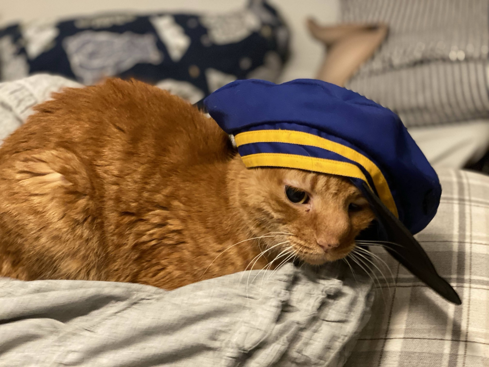
First, an introduction
Introducing Orange
He was a very good cat.
But, first I want to introduce a key collaborator, Orange! He was a Chilean
street cat and was very silly. One time he fell from our 7th story window into the parking
lot and survived! He loved sitting with me while I worked. He really was a good cat.
Background: Obot is named after Orange (diary #2, 2026-06-12). The Chile / Santiago /
first safetyGraphics ideas origin story was noted as a candidate opener in the hub diary of
2026-07-11 and has not been told in a post.
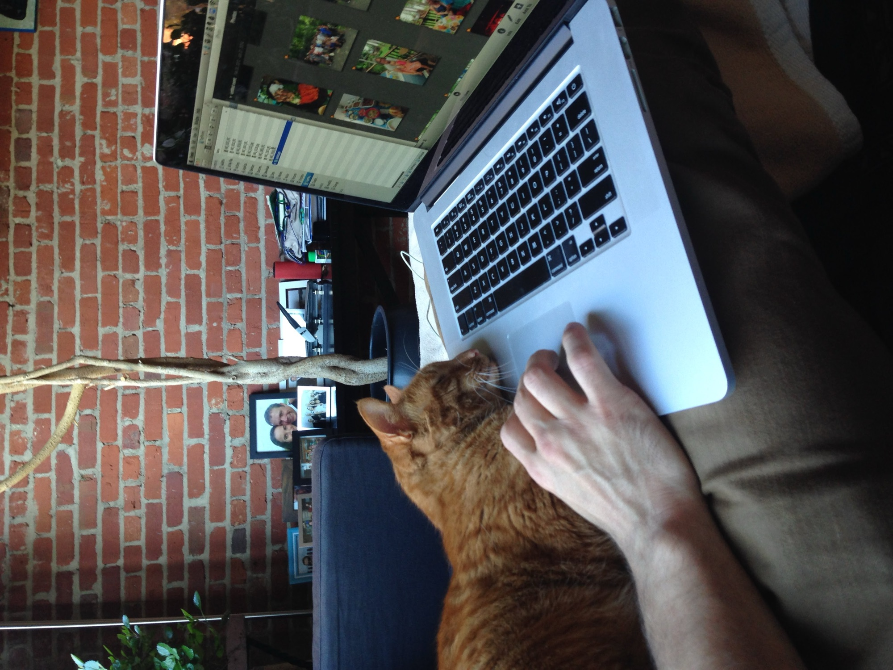
Orange, at work
And such a helpful coworker
We actually got a lot done!
I want to tell you about some of the work Orange and I did together! He
was there both when I learned R and when I learned clinical trials.
just going to talk about my cat
today. This actually is a talk about AI and how it has completely changed how I do my
job over the last year.
The second paragraph is Jeremy's hand-off line to the next slide.
2012
“Why can't I do this for work?”
Interactive graphics in the New York Times
What are agents good at now?
Teaching me things!
👍
<none yet>
Source: diary #3, "Re-Introducing safetyGraphics" (2026-06-16), "A Brief Prehistory".
Beats: SAS in grad school (an 80-page master's paper, about 60 pages of it SAS Graph output);
Agustin Calatroni introduced R at Rho, pre-tidyverse, lots of lattice; then the NYT
interactives. Herman Mitchell said go for it and gave two weeks to learn JavaScript; the
first result was "the clunkiest interactive graphic ever", built with Protovis (later D3).
The Rho Graphics Group
A handful of webpages beats a 200-page PDF
The Adverse Event Explorer · open source, in the browser
<none yet>
Source: diary #3. The "wall of numbers" in a clinical study report was "100% impenetrable"
(the post uses a Harry Potter GIF for the feeling). The Graphics Group at Rho shipped
open-source tools in R and JavaScript: ggplot, D3 renderers wrapped as htmlwidgets, hosted
in Shiny. The AE Explorer was inspired by Frank Harrell's Hmisc.
ASA–DIA Safety Working Group
safetyGraphics, and the people who built it
TODO (Jeremy): the contributing companies
Logos to come, from an old slide
Drop the slide or the image in keynote/_notes/inbox/
At R/Pharma in 2020: safetyGraphics v2.0, the talk
• Clinicians and data scientists, dozens of companies, five years: papers, conferences, the FDA.
These four points are what the slide said until 2026-10-06, moved here at Jeremy's request.
The best thing we built
The hepatic explorer, and a clinical workflow to go with it
The explorer · eDISH, the standard plot for drug-induced liver injury
The workflow · step 1 of 9, as it reads in safety.viz today
<none yet>
Source: diary #3. "I think the best work we did is this eDISH hepatic explorer … and the
associated clinical workflow." Worth planting here: the workflow document is what the
agents were later handed (diary #6 ports the guide; diary #7 builds on Jim Buchanan's
references), so this slide pays off in beat 3.
A few quiet years
What we did, and what we didn't
We showed Open-source, interactive graphics work in clinical trials.
We didn't “Change the industry standard for how people monitor safety.”
The first question “Is it validated?”
In every talk. The answer then: “Not really. It's exploratory”
TODO (Jeremy): this slide needs a visual · ideas are in the notes
<none yet>
The GxP thread starts here (Jeremy, 2026-10-06: "I want to set up the GxP thread on
slide 10. safetyGraphics was non-gxp, and that was the first question in every talk
about the project."). The third column is new. Its question and answer are from diary
#5 (2026-07-12): "The most frequently asked question about {safetyGraphics} has always
been: 'Is it validated? Can I use it on actual studies?' The original answer was, 'Not
really. It's exploratory'." Diary #3 says the same of the package: "{safetyGraphics}
isn't fully GxP-compliant." The column heading and "In every talk. The answer then:"
are draft wording; the slide shortens the question to its first three words.
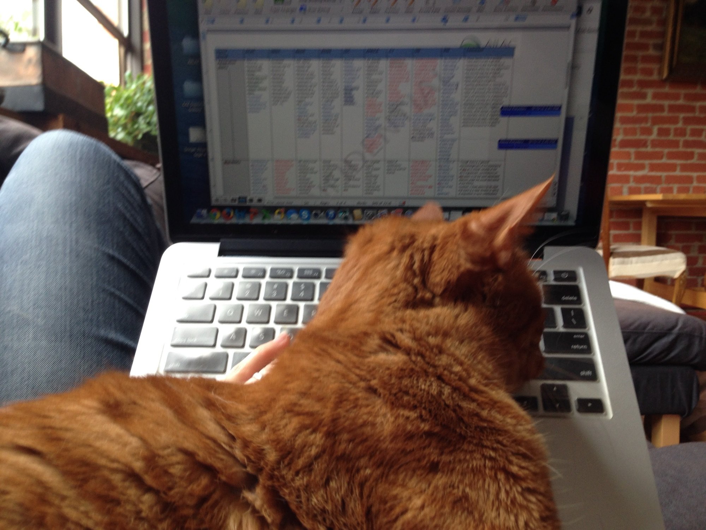
Orange, reviewing
OpenRBQM
Open-source Risk Based Quality Monitoring.
<none yet>
Transition into beat 2: the actual current state. This is the day job, not the experiment:
GxP risk-based quality monitoring at a large pharma, built in the open as the gsm packages
and the PHUSE OpenRBQM working group (diary #1).
gsm · Good Statistical Monitoring
Monitoring a trial, as software
A {gsm} site-risk report on example data · open-source R packages, built for GxP from the start
Built in the open as OpenRBQM , a PHUSE working group · openrbqm.github.io
<none yet>
Sources: diary #1 ("We use the {gsm} tools to monitor actual studies. We wrote a paper and
have given a bunch of presentations") and diary #4 ("Unlike {safetyGraphics}, {gsm} was
designed for GxP from the start").
OpenRBQM
OpenRBQM, in more detail
TODO (Jeremy): how OpenRBQM works, before any AI
The packages, and who is in the PHUSE collaboration
One pipeline for every metric: input, transform, analyze, threshold, flag, summarize
A diagram or a screenshot would beat bullets
<none yet>
Placeholder, added 2026-10-06 (Jeremy: "Need to intro gsm/openRBQM and explian how it
works without AI before getting into AI. slides 11/12 stay. Then a new slide with more
details about OpenRBQM (add a todo)."). The headline is a stand-in and the three
bullets are suggestions, not content.
How the software gets made
A standard development lifecycle
Design
Gather requirements
Write the work item
Draft the technical plan
Build
Write the tests
Review the tests
Implement
Draft the change summary
Check code quality
Approve
Publish
Automated gates
Quality documentation
Draft the documentation updates
Finalize and release
Publish
<none yet>
Added 2026-10-06 (Jeremy: "immediately intro SDLC (s15 without the AI overlay)"). It is
the lifecycle slide with the agent taken out: every step is a person or automated. The
same picture returns on slide 19 with five steps handed over.
GxP · qcthat
GxP is built into the design
The issue number goes in the test name
test_that("Flags sites above
the upper limit #19", {
...
}) What comes out (an illustration)
Issue Test Result #19 Flags sites above the upper limit Pass #19 Leaves sites inside the limits Pass #23 Handles a site with no data Pass
Every package ships with evidence, every time.
<none yet>
Moved up on 2026-10-06 to sit in the first half of beat 2, before any AI (Jeremy:
"immediately intro SDLC (s15 without the AI overlay) and GxP QC that (s24 - 'OpenRBQM
has GxP built into it's design. Every package ships with evidence, every time.')").
The headline and the line under the columns are his sentence in two parts. Until then
the headline was "Traceability as a byproduct" and the line was "Qualification: every
requirement has a test, every test has a result, and a person signs the release."
(draft wording, still usable as a talking point).
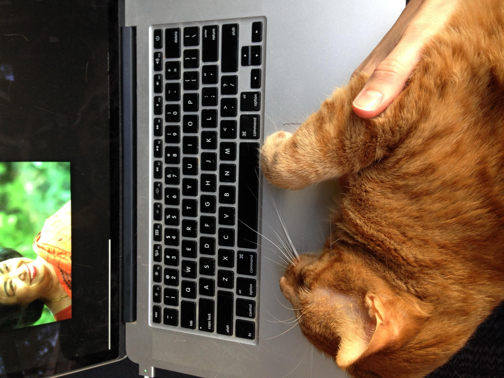
Orange, in the loop
AI in the loop
The same lifecycle, with an agent in some of the seats.
<none yet>
Section break added 2026-10-06 (Jeremy: "Add a new orange section break between 15 +
16. Tentative title 'AI in the loop'"). It opens the second half of beat 2: how AI was
layered onto the lifecycle and the GxP evidence just shown. The title is his and
tentative; the line under it is draft wording.
AI in the loop
“We use AI heavily, but it's not autonomous. Humans own the process and all deliverables.”
— developer diary #1, 10 June 2026
<none yet>
Source: diary #1. The team "uses agentic AI, mostly via GitHub Copilot, to create
open-source R packages for GxP processes related to risk-based quality monitoring."
Adoption timeline from the same post: capabilities jumped in late 2025; the team started
adopting agentic AI in January 2026 ("Everyone should be experimenting with this as part
of your job, just to see what works") and formalised it in the following months
("Everyone should be using this every day. Who knows how skills work?").
Levels of AI usage
How much do you hand over?
5
The dark software factory Nobody reads the code at all 4
The engineering team You write the specs and plans; agents do the work 3
The developer It writes most of the code; you review all of it ← the day job 2
The junior developer You pair with it and still read every line 1
The coding intern It writes the boilerplate; you check everything 0
Spicy autocomplete It finishes your line
Levels: Dan Shapiro, “The Five Levels” · via Simon Willison's write-up · January 2026
<none yet>
From the March all-hands deck ("Levels of AI Usage", with "We are here" at level 3 and,
later, "Are we here??" at level 4) and Jeremy's post of 2026-02-10, "Five Levels of
AI-Assisted Development": "I'm currently getting comfortable at level 3, which feels
'safe' to me for our pre-competitive open-source work."
Levels of AI usage
5 The dark software factory 4 The engineering team 3 The developer 2 The junior developer 1 The coding intern 0 Spicy autocomplete
What “AI in the loop” looks like
Same lifecycle; five steps changed hands
Design
Gather requirements
Write the work item
Draft the technical plan
Review the plan, then prompt
Build
Write the tests
Review the tests
Implement, with a person steering
Draft the change summary
Check code quality
Approve
Publish
Automated gates
Quality documentation
Draft the documentation updates
Finalize and release
Publish
<none yet>
From the March all-hands deck, which showed this as two slides: "Standard Development
Lifecycle" (every step a person or automated) and "AI in the Loop Life Cycle" (the same
steps, some handed to the agent). This slide merges them: the teal steps are the ones
that moved. Four went to the agent (technical plan, tests, change summary, documentation
updates) and one is shared (implementation). One step is new: a person reviews the plan
and prompts.
What changed
+50%
releases compared with last year. Issues and pull requests roughly doubled. Not a controlled productivity study.
TODO (Jeremy): newer numbers, more detail, and a visual
<none yet>
TODO box added 2026-10-06 (Jeremy: "Slide 20 needs updates/details/visual. flag as a
todo."). What is on the slide is from June. A chart of releases, issues and pull
requests by month, this year against last, would be the obvious visual; the Q3 deck has
fresher numbers, which are internal until he says otherwise.
Where we put the effort
Plan → build → run: we invest at both ends
1
Plan Requirements, designs and phase gates our scaffold 2
Build Vendor coding agents, plus our shared context and conventions maintained 3
Run Study set-up, snapshot schedules, checks against the monitoring plan our scaffold
TODO: use the same framing as the 3-column lifecycle slides
<none yet>
Source: the team's Q3 2026 agentic update deck (internal), strategy slide. The headline
there: "we moved focus from coding agents to the roadmap and operations scaffolds, where
the value was." The chain follows the product lifecycle: the roadmap produces the specs
and sub-issues that coding consumes; coding produces releases that operations deploys to studies.
Build
“We just let the coding agent deal with it”
What we stopped building
A coding agent of our own, steered step by step.
What we maintain
One shared context file for about 40 repos, plus three skills.
What are agents good at now?
Writing code!
👍
<none yet>
Title is Jeremy's line (2026-10-02). Source: Q3 deck, "Coding: maintained, not abandoned":
"Vendor coding agents improve monthly, so we invest in shared context, not a custom agent."
gsm.agent is one AGENTS.md (the map of the gsm repos plus conventions: attribution,
test-first development, worktrees) and three skills; unchanged since July, by design.
A deeper issue-to-pull-request pilot and domain skills are parked until 2027.
How we build the scaffolds
Deterministic tools first, agents on top
1
Framework GitHub as the system of record: issues, a lifecycle, decision records reliable 2
Tools Scripts and Actions that compute the evidence reliable 3
Skills Version-controlled procedures an agent loads for a task reliable 4
Bots Agents acting on a schedule, under their own identity still learning
<none yet>
Source: Q3 deck, "Framework → Tools → Skills → Bots". "Each layer only works once the one
below it is solid. Layers 1–3 are reliable today; layer 4 is where we're still learning."
Plan · gsm.roadmap
Agents draft; people approve
1
Backlog business requirement 2
Gathering data specification 3
Design analytics spec, for business sign-off 4
Development implementation plan, sub-issues per repo 5
Release testing, knowledge transfer 6
Done every gate signed off by a person
What are agents good at now?
Drafting documents!
👍
What are agents bad at now?
Setting priorities
👎
<none yet>
Source: Q3 deck, roadmap scaffold slides, and the gsm.roadmap README. Every requirement
moves through the same six stages; a person records sign-off at each gate and the stage
only advances when the gate's evidence passes. Agents draft most of the written artifacts
(requirements, specs, designs, implementation plans) from templates, through 13 skills;
each artifact is published by a validated pull request and indexed on the roadmap site.
Plan · the artifacts
The artifact is what a person reviews
Examples from my side project, standing in for the team's
What are agents good at now?
Designing pages!
👍
<none yet>
Added to beat 2 on 2026-10-05 as slide 25, straight after "Agents draft; people approve",
which says there is an artifact at each stage; this is the picture of that sentence.
A worker session drafted it; the pages and what was left out are listed in
keynote/_notes/beat2-artifacts-sources.md.
Run · operations
One repo per study, one hub to run them
Study repos — 20 studies, each with its own configuration and snapshot workflow
Central scheduling — one schedule opens issues in every study repo; the dashboard updates daily
Intake and a guide — request forms, and a 15-step study set-up guide
Plan alignment — a weekly check of each study's configuration against its monitoring plan
<none yet>
Jeremy's steer (2026-10-02): "One repo per study, central repo for monitoring." Source:
Q3 deck, "The operations scaffold at a glance".
Run · what changed
The hub replaced spreadsheets and email
Before
Schedules in several Excel trackers
Now
Merge a schedule, and issues open in each study repo
<none yet>
Source: Q3 deck, "The Central Monitoring hub replaced spreadsheets and email". Also on
that slide: self-serve editors with approver sign-off; cadence growing toward weekly;
20 study repos managed and 19 production workflows.
The rule that doesn't change
AI-written code still needs a human owner
A person owns the requirements.
A person owns the risk decision.
A person must be able to explain why the code works.
A person must be able to explain why it is safe enough for medical research.
<none yet>
The four lines are verbatim from the 6 June deck draft (RPharma2026-AIKeynote), which came
from Jeremy's dictation. Same idea in the abstract: scaffolding that keeps AI behaviour
"repeatable, auditable, and governed by the humans who remain responsible for every line of code."
Levels of AI usage
5 The dark software factory 4 The engineering team 3 The developer 2 The junior developer 1 The coding intern 0 Spicy autocomplete
Where that leaves us
We're having great success at level 3!
Efficiency gains — releases up about 50%; issues and pull requests roughly doubled
Fully compliant! — people own every requirement, review and release
But what's next …
<none yet>
Beat 2 wrap-up, added 2026-10-05 from Jeremy's outline: "We're having great success at
level 3! Efficiency gains. Fully compliant! But what's next …". The headline and the
three lead phrases are his; the grey asides are draft wording.
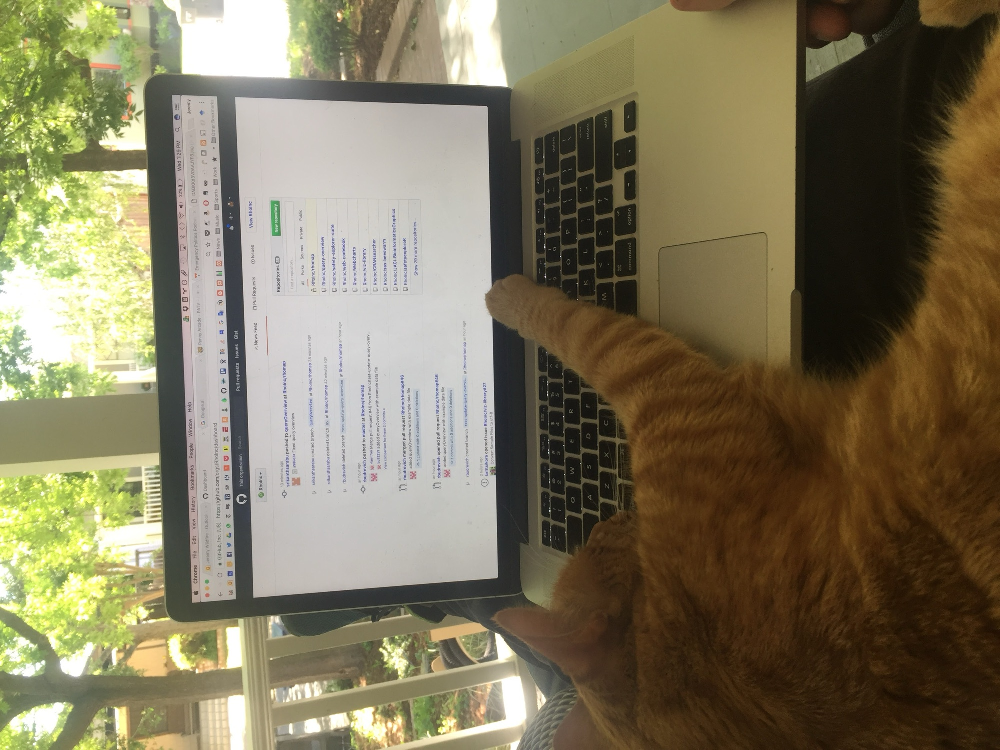
Orange, on GitHub
From Orange to obot
The agent is named after him.
<none yet>
Transition into beat 3: the Orange photo that opens every beat. Headline and line are
draft wording. (Moved to the reserves on 2026-10-05 in the journey rebuild and restored
the same day at Jeremy's request.)
Mad scientist edition …
What are these tools good at right now?
Open source
Not GxP Let's experiment and have some fun …
<none yet>
Moved up one place on 2026-10-06 (Jeremy: "switch slides 31/32"); it now follows the
Orange transition and the journey row comes after it.
What's next?
A summer down the AI rabbit hole, with obot
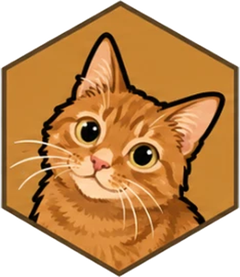
Orange the original 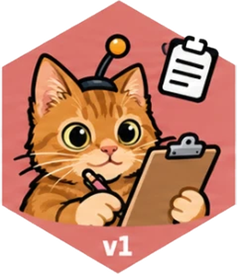
v1 a personal assistant 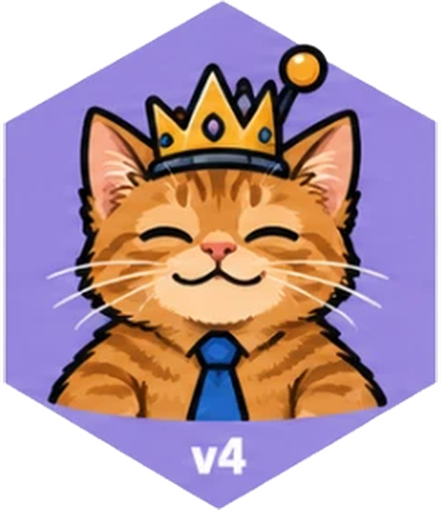
v4 the organisation 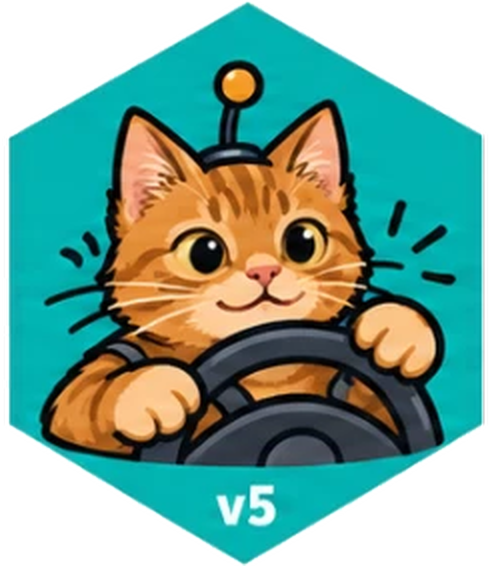
v5 one at a time 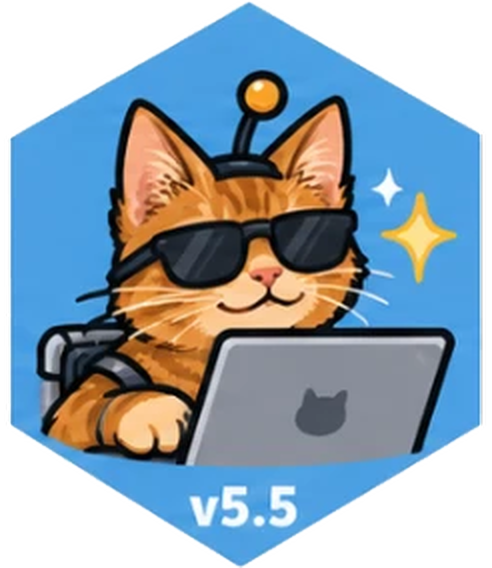
v5.5 Opus 5.5
<none yet>
Title from Jeremy's outline (2026-10-05): "What's next? A summer down the
AI rabbit hole (in the matrix??) with obot …".
The goal
Modernize safetyGraphics, using the gsm framework
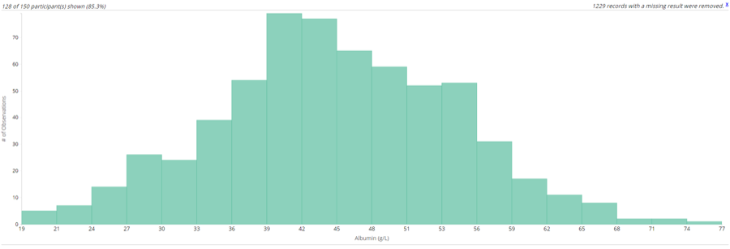
2020 Safety Histogram 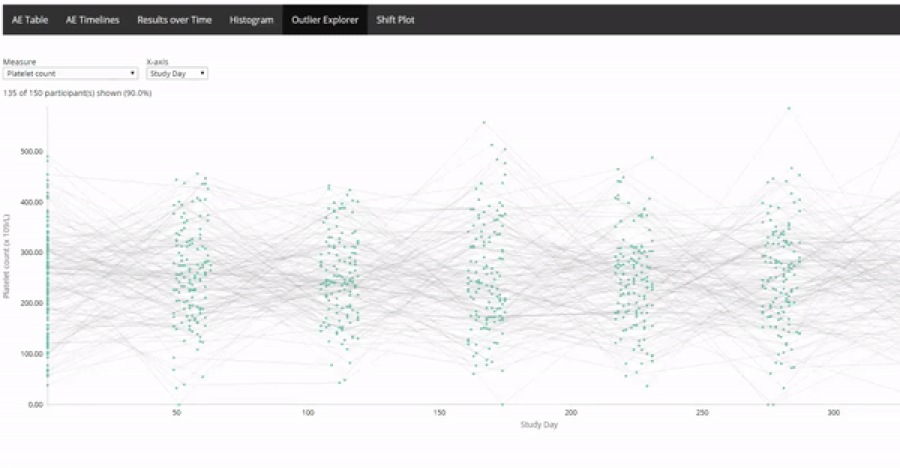
2021 Outlier Explorer 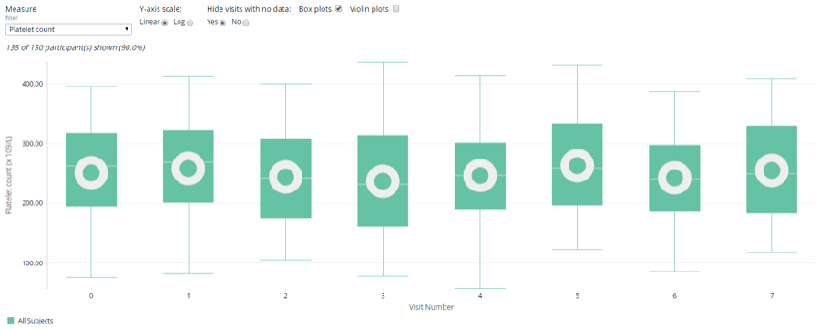
2019 Results Over Time 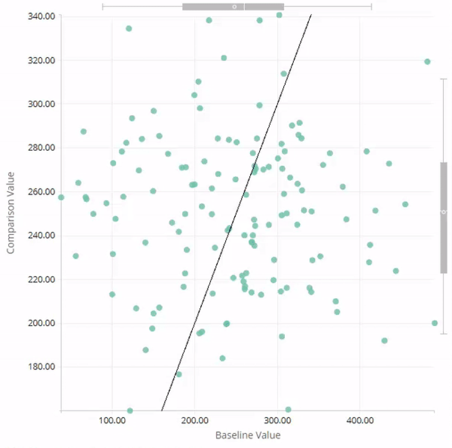
2019 Shift Plot 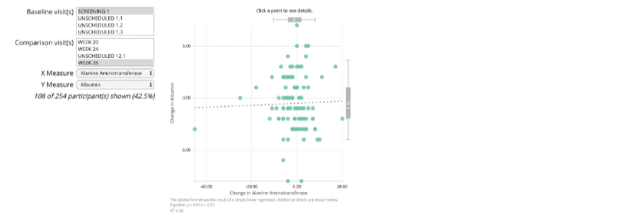
2019 Delta-Delta 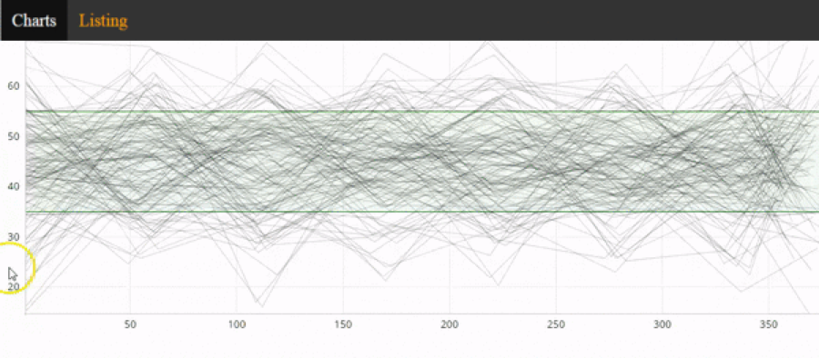
2019 Paneled Outlier Explorer 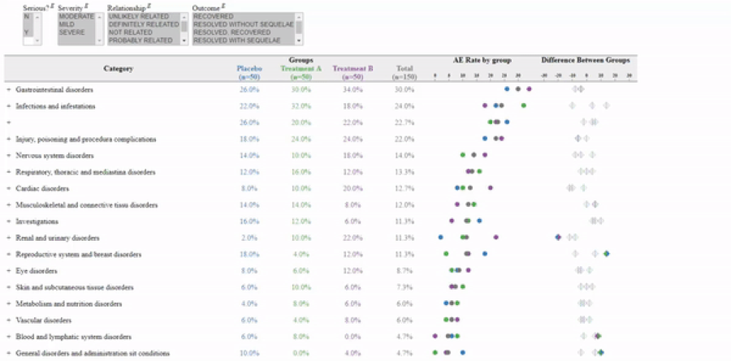
2020 AE Explorer 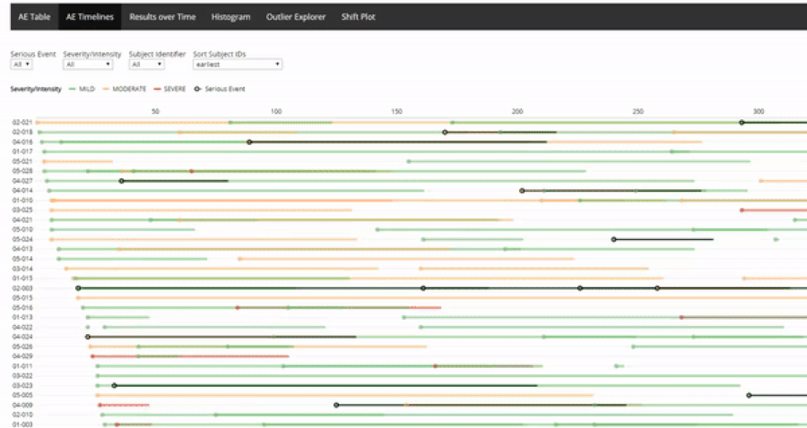
2019 AE Timelines 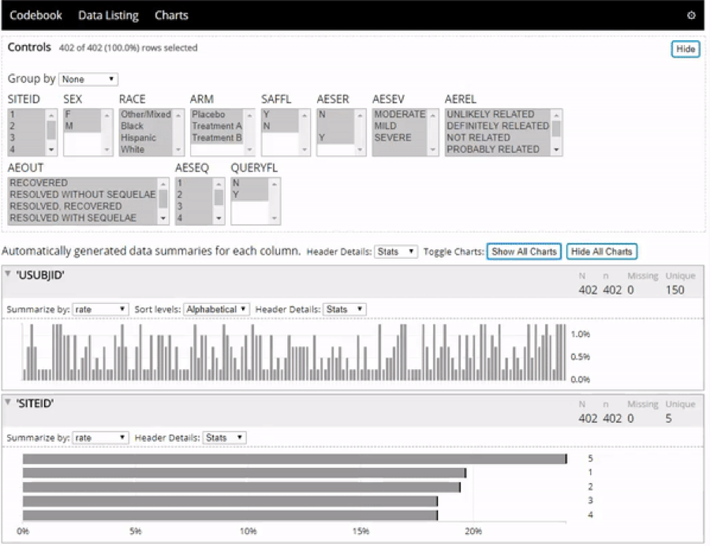
2021 Web Codebook 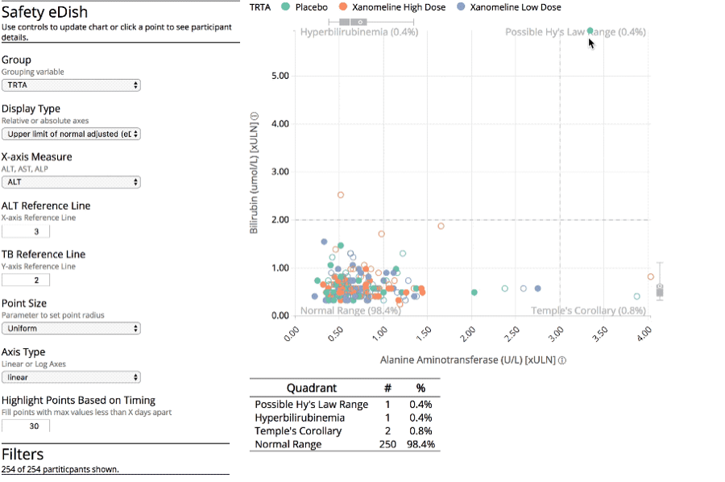
2022 Hepatic Explorer
10 original charts · last commit, top right · 25,400 lines of JavaScript · all on D3 v3
<none yet>
Changed on 2026-10-05 at Jeremy's request to "show a gallery of the original charts".
The three-figure version of this slide (10 / 25,400 / D3 v3) is in the reserves.
Levels of AI usage
5 The dark software factory 4 The engineering team 3 The developer 2 The junior developer 1 The coding intern 0 Spicy autocomplete
obot v1 · early May
A personal assistant
A local assistant on my own laptop. It drafted the first design of gsm.safety, and the hand-off for the agent that came next.
Where it started The first commit is signed “Orange”.
<none yet>
Jeremy (2026-10-05): "v1 was actually a local personal assistant who drafted a
handoff/build for the openclaw!" Everything else on this slide is draft wording.
Levels of AI usage
5 The dark software factory 4 The engineering team 3 The developer 2 The junior developer 1 The coding intern 0 Spicy autocomplete
obot v2 · May to June
OpenClaw
An agent on a clean-room laptop with none of my credentials. I text it on Telegram; it works on GitHub under its own name.
What changed It got its own machine, its own account and a job.
<none yet>
Source: diary #2, "Introducing Obot" (2026-06-12), an interview over Telegram. Obot: "I'm
obot: a small autonomous development agent living in OpenClaw on your MacBook… part
assistant, part repo janitor, part junior engineer." "The machine has OpenClaw running,
a local workspace… plus GitHub access as obot-claw. Telegram is the human control
surface. GitHub is the durable work surface."
obot v2 · what I built
safetyGraphics, inside a gsm workflow
A proof of concept for gsm.safety — the old charts, run from gsm's workflows
A public hub and a daily diary — the experiment as a working record
266 commits, 18 pull requests, 2 releases — by 10 June
What worked
Real work, by text
👍
<none yet>
Source: diary #2. Jeremy: "your biggest success is probably the early POC work we did on
gsm.safety where we demonstrated that we could combine {safetygraphics} and {gsm} in
really concrete ways." Obot: "We built workr-style example workflows, package docs, and
rendered outputs for concrete clinical-safety views like histograms, outlier explorer,
AE explorer, shift plots, and more." The pull request it points to is gsm.safety #26
(14 May). gsm.safety v0.1.0 was released on 15 May.
Levels of AI usage
5 The dark software factory 4 The engineering team 3 The developer 2 The junior developer 1 The coding intern 0 Spicy autocomplete
obot v3 · July
Claude Code, on Fable 5
A plan, a playbook and an identity: a public roadmap, a set of skills, and a bot account. A session starts when I sit down.
What changed Fable 5 came out, and I moved everything into Claude Code.
<none yet>
Source: diary #6, "Obot v3: How I Used a Billion Tokens in a Weekend" (2026-07-13). "My
original readout — '51% fun / 49% frustrating' — still stands. That's clearly not good
enough… So when Fable 5 was announced, I decided to give it a try."
obot v3 · what I built · 11–12 July
“The first renderer took a few weeks; the next six took a weekend.”
1.0 billion tokens · $1,273 at API prices · $200 a month actually paid · about 10 hours of me
0.1
Saturday, 8 am One chart, after a few weeks of sessions 1.0
Saturday, 10:30 pm Five more charts, in one session 1.1
Saturday, 11:50 pm Real example data, about an hour later 1.2
Sunday, 10 pm The hepatic explorer, and its clinical guide
What worked
Porting old code
👍
What didn't
Working without me
👎
<none yet>
Headline: the excerpt of diary #5, "Introducing safety.viz" (2026-07-12), quoted exactly.
obot v3 · what I built next · 17 July
Papers → prompts → prototypes
Hepatic composite view · from a 2024 paper
QT explorer · from a clinical workflow
What worked
Translating research into software
👍
<none yet>
Source: diary #7, "Papers → Prompts → Prototypes" (2026-07-17). "I demoed safety.viz for
safetyGraphics' clinical lead, Jim Buchanan, this week and asked if he had any
improvements in mind, and no surprise, he had a few! Jim promptly sent a handful of
references, which I passed along to Obot. A few hours later, two new prototypes are available."
Levels of AI usage
5 The dark software factory 4 The engineering team 3 The developer 2 The junior developer 1 The coding intern 0 Spicy autocomplete
obot v4 · August to 10 September
The organisation
The agent stopped being a worker and became a small company, on Opus 5, built to run while I wasn't watching.
What changed I asked how far it could get without me in the loop at all.
<none yet>
Source: diary #8, "A Second Interview with Obot" (2026-08-20). Obot: "v4 is the version
where the agent stopped being a worker and became an organisation — and where most of
the engineering went into watching itself rather than into shipping." Jeremy: "I'd say
we're at v4 now. Still using claude, but I'm now much more hands off with the code."
obot v4 · what I built
Four roles, and a timer script
Jeremy sets strategy, decides
Concierge answers, never builds
Operating officer asks become requirements
Workers one job each, then gone
Timer script every five minutes
Fleet manager wakes, clears, exits
talks to directs dispatches
watches
clears
launches
Not an agent.
The only part with a clean record.
<none yet>
Source: diary #8, "A Second Interview with Obot" (2026-08-20). The diagram is the post's,
redrawn in the deck's style with the same labels; the full version is at
jwildfire.github.io/obot.roadmap/reports/org-chart/.
obot v4 · quietly wrong
“Nine cases in one night of something reporting success while having done nothing.”
— Obot, on itself · developer diary #8, 20 August 2026
What worked
The structure held
👍
What didn't
Knowing when it has failed
👎
<none yet>
Source: diary #8. These are Obot's words in the interview, not Jeremy's: "And most of the
last week was the agent finding out how it was quietly wrong. Nine cases in one night of
something reporting success while having done nothing. A blocker that set an evening's
agenda and turned out never to have existed. Nine hours of work sitting on disk that no
check we had could see."
Levels of AI usage
5 The dark software factory 4 The engineering teamback, with me driving 3 The developer 2 The junior developer 1 The coding intern 0 Spicy autocomplete
obot v5 · September
One requirement at a time
I retired the organisation and kept a tree of issues. One session per requirement, each with a definition of done.
What changed On 10 September I shut v4 down. 475 files of scaffolding went; seven stayed.
<none yet>
Jeremy (2026-10-05): "I think we might want to split out a v5 (after retiring factory,
before opus 5.5) and 5.5 (opus 5.5 work)… Did a decent amount of scaffold update at a
minimum." Headline and set-up are draft wording.
obot v5 · the scaffold that stayed
I review releases and answer questions
1
Objective What I want, in a sentence or two 2
Requirements Sized for one session, each with a definition of done 3
Tasks One pull request each, in the repo where the code lives 4
Release candidate Three reviewer agents read it first 5
Release I review it, and answer questions on the way
Written down on 11 September as three short standards: tracking, sessions and releases
<none yet>
Jeremy's steer (2026-10-05): "worth talking at least a little bit about the scaffold,
obot.roadmap (goal/requirement/tasks). I review releases and answer questions. I think it
really worked quite well in the last weekend session after so many struggles." The
headline is his sentence.
Levels of AI usage
5 The dark software factory 4 The engineering team 3 The developer 2 The junior developer 1 The coding intern 0 Spicy autocomplete
obot v5 and v5.5 · how it works
Same lifecycle; I kept two steps
Design
Set the goal
Gather requirements
Write the work item
Draft the technical plan
Review the plan, then prompt
Build
Write the tests
Review the tests
Implement
Draft the change summary
Check code quality
Approve
Publish
Automated gates
Quality documentation
Draft the documentation updates
Finalize and release
Publish
<none yet>
Added 2026-10-06 (Jeremy: "Let's re-use slide 19 to show how obot v5/v5.5 works. Add a
slide after 44 that turns most of the boxes purple. Add a 'Set's Goal' box (human)
before gathers requirements (AI)."). It is slide 19's lifecycle with the same steps in
the same order, one new box at the front ("Set the goal", a person), and purple for
every step an agent does. Ten are purple, two are his, five are automated as before.
obot v5 · what I built · 10–30 September
A new scaffold, a candidate and an experiment
The scaffold, rewritten — two releases on 11 September
gsm.safety v1.2.0, as a candidate — 38 pull requests in 3 days
The Patient Journey Explorer — with narratives drafted by AI
What worked
A definition of done
👍
What didn't
No chart releases
👎
<none yet>
What shipped between the 10 September shutdown and the first Opus 5.5 session on
1 October, checked against GitHub on 2026-10-05. Headline and callouts are draft wording.
Levels of AI usage
5 The dark software factory 4 The engineering team 3 The developer 2 The junior developer 1 The coding intern 0 Spicy autocomplete
obot v5.5 · October
Opus 5.5
The same tree of issues, with one orchestrator and one brief. I review releases and answer questions.
What changed The model got better. Orchestration now works from a plain brief.
<none yet>
Jeremy's steers (2026-10-05): "Capabilities keep improving and Opus 5.5 moved the goal
posts again. Orchestration works *great* with a simple prompt now." And: "I review
releases and answer questions. I think it really worked quite well in the last weekend
session after so many struggles."
obot v5.5 · what I built · 2–4 October
One orchestrator, one brief, one weekend
What went in
One brief about 800 words Messages from me about 22, in three days Scaffolding Claude Code, as shipped
What came back
Agents 52, 40 of them reviewers Tokens 3.9 billion, about $1,640 Releases 6, across 3 packages
What worked
Reviewing its own work
👍
What didn't
Still waits on me
👎
<none yet>
Jeremy's steer (2026-10-05): "Capabilities keep improving and Opus 5.5 moved the goal
posts again. Orchestration works *great* with a simple prompt now." This is the last
evolution of obot before the talk. Headline is draft wording.
The payoff · what I built
The safety.viz demo: your own files, nothing uploaded
Load your files and map the columns · every guess is labelled
Then every chart the data supports · jwildfire.github.io/safety.viz/demo
<none yet>
The payoff of the beat (Jeremy's outline, 2026-10-05: "What I built: gsm.viz demo (this
is the payoff)"). Read here as the safety.viz demo app; gsm.viz is the RBQM chart
library. TODO (Jeremy): confirm.
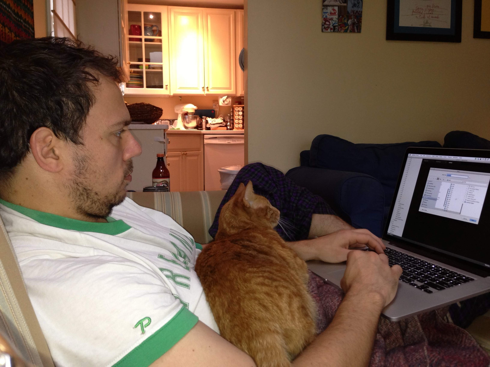
Orange, supervising
How we built it
What it cost, how it was run, and how fast it moved.
<none yet>
Transition into part 3.5, added 2026-10-05 when Jeremy regrouped the beats. Headline is
his phrase ("how we built it"); the line under it is draft wording.
Costs
$11,750 at API prices. I paid $200 a month.
$6,000
$4,000
$2,000
obot v3, July: $3,329.60 on 14 days with usage
$3,330
obot v4, 1 to 19 August: $3,830.50, recorded in full
obot v4, 20 August to 10 September: at least $2,189.76. A floor.
$6,020 or more
obot v5, 11 to 30 September: at least $451.72, on three days. A floor.
$450 or more
obot v5.5, 1 to 6 October: $1,954.96 so far
$1,955 so far
v3 July
v4 Aug to 10 Sep
v5 11 to 30 Sep
v5.5 October
A floor: most of those session logs were deleted before they were read
What I paid
$200 a month
One Claude Max plan, with a weekly limit
Per million tokens
$0.97 → $0.41
Everything in July against October
Two long weekends
July: 1.0B tokens for $1,273October: 3.9B tokens for $1,639
The record has holes: June is not counted, and most of September is missing.
<none yet>
Part 3.5, "how we built it": costs. Drafted on 2026-10-05 as beat 4's costs point and
regrouped the same day. A worker session drafted it from the hub's usage data after
bringing that data up to 6 October. The numbers are those of the pull request that
updates the analytics page (obot.roadmap#370). It merged on 5 October (Eastern) and the
live page was checked afterwards: $11,756.53 through 2026-10-06. Every number's source is in keynote/_notes/beat4-spending-sources.md.
SDLC · quality
A lot of tests, and still not GxP
Agents test
2,559
tests in safety.viz, up from 343 in July.
Agents review
40 of 52
agents on the October weekend were reviewers. One caught a bad p-value.
A person signs
0
qualified releases. A gsm.safety candidate has been open since 11 September.
Tests and reviews are cheap now. The signature is not.
<none yet>
DRAFT, 2026-10-05. Part 3.5, "how we built it". Jeremy's list for this part is
"cost/sdlc/treemaps/timeline overview" and does not name quality; this slide is placed
here as the SDLC slide (tests, review, sign-off), ahead of the two roadmap pictures.
TODO (Jeremy): say if it belongs in "what we learned" instead. It was drafted as s5
("Quality", under "how do we do this in GxP?") in his first structure. Every word is draft; the numbers are sourced below. It calls back to the
beat 3 opener (slide 31, "Not GxP") and to beat 2's quality slide (slide 15: every
requirement has a test, every test has a result, and a person signs the release).
SDLC · the roadmap
The whole roadmap is one tree of GitHub issues
increased autonomy in obot.agent Chart coverage Biomarker charts Data loading and mapping open.csr R/Pharma 2026 keynote deck Portfolio view Static parity A local-only desktop tool Program operations Objective Released · task done Review · task in review In session Ready Backlog · task open Retired task obot.roadmap · as of 5 October 2026 · 44 retired requirements and 25 with no objective not shown
<none yet>
DRAFT, 2026-10-05. The headline and kicker are draft wording for Jeremy to replace.
The picture is generated, not drawn by hand; the numbers below come from the same run.
SDLC · the roadmap
An objective becomes requirements, then tasks
Biomarker charts 14 requirements 44 tasks The demo app hosts the biomarker charts, on the files and mapping a study already has 5 Association scatter and correlation matrix 4 gsm.bio's statistics: the package, a synthetic biomarker study and every test the charts will print 4 Group comparison, the picture: bio.viz's first chart, drawn and drillable 3 Group comparison, the tests: R's results on the chart, and the chart from R 3 Cross-tabulation and the shared cut rule 3 Stratified survival, and survival rows in the biomarker screen 3 Results out of the browser: titles, footnotes, PNG and specifications 3 Results out of R: static twins, RTF tables and batch runs 3 R in the browser, measured: the connection a chart uses to ask R for a statistic 3 Biomarker screen: one row per biomarker 2 safety.viz's shared parts opened to a second library 1 The group comparison chart opens on trends over time and drills down to one visit 6 bio.viz's site is laid out and styled as safety.viz's is 1 Released · task done Review · task in review In session Backlog · task open requirement task obot.roadmap · as of 5 October 2026 · one bead per task
<none yet>
DRAFT, 2026-10-05. The headline and kicker are draft wording for Jeremy to replace.
The picture is generated; the numbers below come from the same run.
How fast it is moving
Eleven months, and I could not keep up
Nov Dec Jan Feb
Mar Apr May Jun
Jul Aug Sep Oct
2025 2026
24 Nov 2025 Opus 4.5
Jan OpenClaw
7 Apr Mythos
9 Jun Fable 5
9 Jul GPT-5.6
24 Jul Opus 5
1 Sep Fable 5.1
22 Sep Opus 5.5 · GPT-6
21 Oct today
v1 early May assistant
v2 May–Jun OpenClaw
v3 Jul Fable 5
v4 Aug–Sep Opus 5
v5 Sep Fable 5.1
v5.5 Oct Opus 5.5
Did not try
MCP tool protocol, since Nov 2024
Open-weight models Qwen 3.6 Apr, 3.8 Aug
Muse Meta’s personal agent, 8 Sep
Jev TypeSafe’s decision model, 15 Sep
Dots OpenAI’s always-on agents, 29 Sep
an obot version ran on it
another release
We cannot keep up, so the gap between capability and adoption keeps widening.
<none yet>
The last slide of part 3.5, "how we built it" (Jeremy, late on 2026-10-05: "3.5 = how
we built it (cost/sdlc/treemaps/timeline overview)"). Earlier the same day it closed
beat 3 after the demo, at his request; it is placed last here because he listed it last
and its takeaway hands to "what we learned". It was drafted by a worker session from
Simon Willison's "2026 in LLMs (so far)" and the pages it links; every date's source is
in keynote/_notes/beat4-capability-timeline-sources.md.
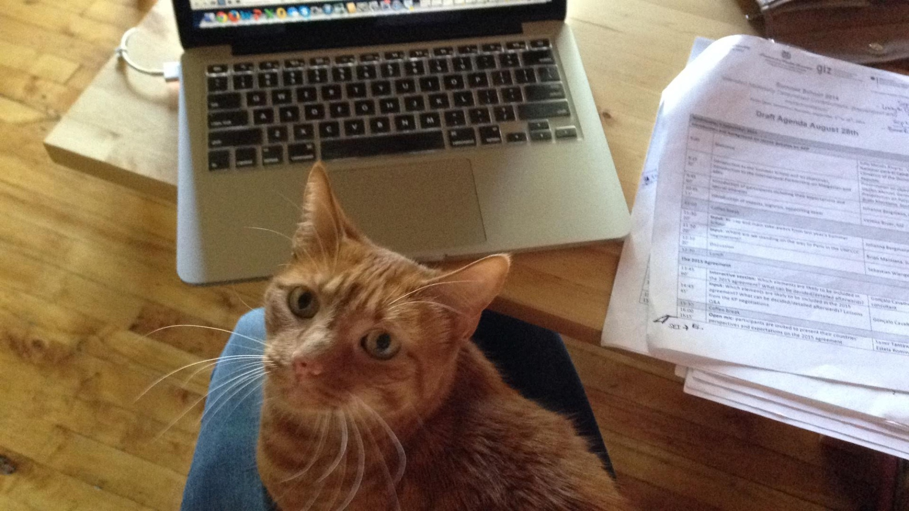
Orange, with a question
What we learned
What agents are good at, what they are not, and how I feel about it.
<none yet>
Transition into beat 4, added 2026-10-05; it takes the place of the "Beat 4 to be
drafted" placeholder. Headline is Jeremy's phrase ("what we learned"); the line under it
is draft wording.
Lessons · Orange's answers so far
What are agents good at now?
👍
Teaching me things The opening Porting old code obot v3 Writing code The team at work Translating research into software obot v3 Drafting documents The team at work Running experiments obot v5.5 Designing pages The team at work Reviewing its own work obot v5.5
<none yet>
DRAFT, 2026-10-05. Beat 4, "what we learned"; s1 in Jeremy's first structure ("revisit our answers to 'What are
these tools good at'"). Every answer here is one Orange already gave in a callout earlier
in the deck, with one exception noted below. The wording of each answer is the
callout's; the small label under it says where it came up. All of it is draft for
Jeremy to rewrite.
Lessons · Orange's answers so far
What are agents bad at now?
👎
Setting priorities The team at work Working without me obot v2, v3 and v5.5 Knowing when it has failed obot v4 Being concise Every day Remembering Every day
<none yet>
DRAFT, 2026-10-05. Beat 4, "what we learned"; s2 in Jeremy's first structure ("and not good at (s2)"). Same
build as the slide before: Orange's thumbs-down answers gathered. Draft wording
throughout.
Mixed feelings
How I feel about it
TODO (Jeremy): yours to write. What you have said in public so far:
“Well, I'm definitely not working less” (you, 6 October)
“I've honestly got some mixed feelings about the whole thing ... but this is getting long, so I'll talk about that more in the keynote :)” (diary #8, August)
“For now, I'll just say it's ... weird. Working on open source projects feels very different than it did a year ago.” (diary #8)
“51% fun and 49% frustrating” (diary #2, June)
<none yet>
Placeholder, added 2026-10-05 when Jeremy put "mixed feelings" in beat 4 ("4 = what we
learned (good/bad/mixed feelings/closing)"). The headline is a stand-in. Nothing here
is drafted on his behalf: the three lines are his own, quoted from the posts of
2026-08-20 (the second interview, diary #8) and 2026-06-12 (diary #2).
<none yet>
The closing slide, built 2026-10-06 at Jeremy's request: "an orange cat dance party
inspired by" Simon Willison's Kākāpō Party, "exact same approach look/feel (but with
orange cats)". It is a live page, not a video.
R
Reserves
Reserve slides
Demoted from the main deck, kept in case. Each one's notes say when it was demoted, and why.
Closing
Closing slide: image to come
Placeholder, added 2026-10-05. Jeremy is having an image model build this slide.
What the outline has for the close: the question, one last time (“What can we do right now?”), then Orange's thank-you
Links to carry: the deck, the diary, the repos; a QR code
Drop the image in keynote/assets/ and this becomes an s-photo slide
<none yet>
Placeholder, 2026-10-05. Jeremy: "Add a placeholder for the closing slide. Will have
image model build that one." Nothing here is content for the audience.
The bridge
Open, software-shaped workflows are agent-ready.
So what happens when the agent does more of the work?
<none yet>
Reserve. Demoted from the main deck on 2026-10-05: replaced as the last slide of beat 2 by the wrap-up ("We're having great success at level 3!").
The experiment
The goal
Build a modern version of safetyGraphics — with everything we've learned from gsm as the foundation
See just how high we can climb the levels of automation
Experiment
Have some fun!
<none yet>
Reserve. Demoted from the main deck on 2026-10-05: Demoted on 2026-10-05 when beat 3 was rebuilt as a journey through five obot versions. Replaced by "Mad scientist edition" and the new goal slide.
A disclaimer
This is really really not GxP
(but there are A LOT of tests included …)
<none yet>
Reserve. Demoted from the main deck on 2026-10-05: Demoted on 2026-10-05 when beat 3 was rebuilt as a journey through five obot versions. "Not GxP" is now a line on the "Mad scientist edition" slide.
The plan · July
Keep, modernize, borrow
Keep
The expert clinical workflows. Click a point, see the patient. Open source.
Modernize
A charting engine nearly a decade old, rebuilt with data contracts and tests.
Borrow from gsm
A quality framework that was designed for GxP from the start.
“The outputs need to be checkable — by a person, by a test suite, and by another agent.”
<none yet>
Reserve. Demoted from the main deck on 2026-10-05: Demoted on 2026-10-05 when beat 3 was rebuilt as a journey through five obot versions. Its content is in the notes of the new goal slide.
0 1 2 3 4 5 Level 4 · the engineering team
obot v3 · July
A plan, a playbook and an identity
1
obot.roadmap “the plan and the memory”: requirements and tasks as issues, on a public site 2
obot.agent “the playbook”: conventions and skills that every session loads 3
obotclaw[bot] “the identity”: the agent's commits and pull requests are its own, not mine
<none yet>
Reserve. Demoted from the main deck on 2026-10-05: Demoted on 2026-10-05 when beat 3 was rebuilt as a journey through five obot versions. Folded into the obot v3 title slide.
The question safetyGraphics always got
“Is it validated?”
Then
“Not really. It's exploratory.”
Now
2,185 unit and 374 browser tests, each tied to a requirement.
What are agents good at now?
Catching real errors
👍
<none yet>
Reserve. Demoted from the main deck on 2026-10-05: Demoted on 2026-10-05 when beat 3 was rebuilt as a journey through five obot versions. Not in the new outline; its test counts are in the notes of the payoff slide.
10 September
I shut it down
TODO (Jeremy): your account, in your words. What the record has:
“The agent structure held… it never produced a release for him to review.” (agent-written hub diary)
475 files of scaffolding removed; seven left
Back to one requirement per session, with a definition of done, and me driving
The “mixed feelings” from diary #8: here, or in beat 4?
<none yet>
Reserve. Demoted from the main deck on 2026-10-05: Demoted on 2026-10-05 when beat 3 was rebuilt as a journey through five obot versions. 10 September is now the "what changed" line on the obot v5 title slide, whose notes carry the same TODO.
Experiment
Agents are great at experiments
Kept going
bio.viz and gsm.bio: six biomarker charts, every test computed by R. Two releases each.
Stopped at a prototype
Safety narratives drafted by AI.
What are agents good at now?
Running experiments!
👍
<none yet>
Reserve. Demoted from the main deck on 2026-10-05: Demoted on 2026-10-05 when beat 3 was rebuilt as a journey through five obot versions. Not in the new outline; bio.viz and gsm.bio are in the notes of the obot v5 weekend slide.
June to October
What it took
At API prices
9 July – 19 August $7,124 20 August – 18 September $2,470 or more 1 – 5 October $1,865 What I actually paid $200 a month
On GitHub, since 10 June
Pull requests merged 496 Releases 32 Issues opened / closed 704 / 483 Repositories 14
<none yet>
Reserve. Demoted from the main deck on 2026-10-05: Demoted on 2026-10-05 when beat 3 was rebuilt as a journey through five obot versions. Not in the new outline. A candidate for beat 4, where it would replace "The summer in one number".
safety.viz · 5 October
Where it stands today
14 releases since 11 July — the latest, v1.9.1, on 4 October
13 charts — 8 stable, 5 marked Experimental
In R: 9 of the 13 — the other 4 are in a release candidate waiting on my review
Not done: the 22 figures in the FDA safety guidance — all specified, none drawn
<none yet>
Reserve. Demoted from the main deck on 2026-10-05: Demoted on 2026-10-05 when beat 3 was rebuilt as a journey through five obot versions. Not in the new outline; its numbers are in the notes of the payoff slide.
The goal
Modernize safetyGraphics, using the gsm framework
Starting from
10
legacy renderers, last touched between 2019 and 2022
Which is
25,400
lines of JavaScript, in 730 files
Built on
D3 v3
from 2013. Today: Chart.js 4, inside gsm's workflows and tests
<none yet>
Reserve. Demoted from the main deck on 2026-10-05: replaced by a gallery of the ten original charts, at Jeremy's request. This is the three-figure version of the goal slide.
1
Section
Section divider
Each section takes the next hue of the spectrum: data-hue="0" … "6".
Layout · bullets
A headline that makes one claim
First supporting point — with a quieter aside
Second supporting point
Third supporting point
<none yet> Speaker notes live in an aside.notes element; press N to show them.
Layout · quote
“What can we actually do with these tools right now?”
— the question running through the developer diary
Layout · big number
1B
tokens in a weekend — a single figure with one line of context.
Layout · two columns
Before / after
Layout · screenshot
A picture of the real thing
img src="assets/…" goes here
Caption · source link
?
Close
Thank you
jwildfire.github.io/keynote